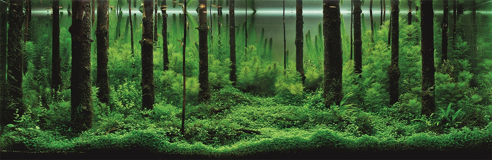
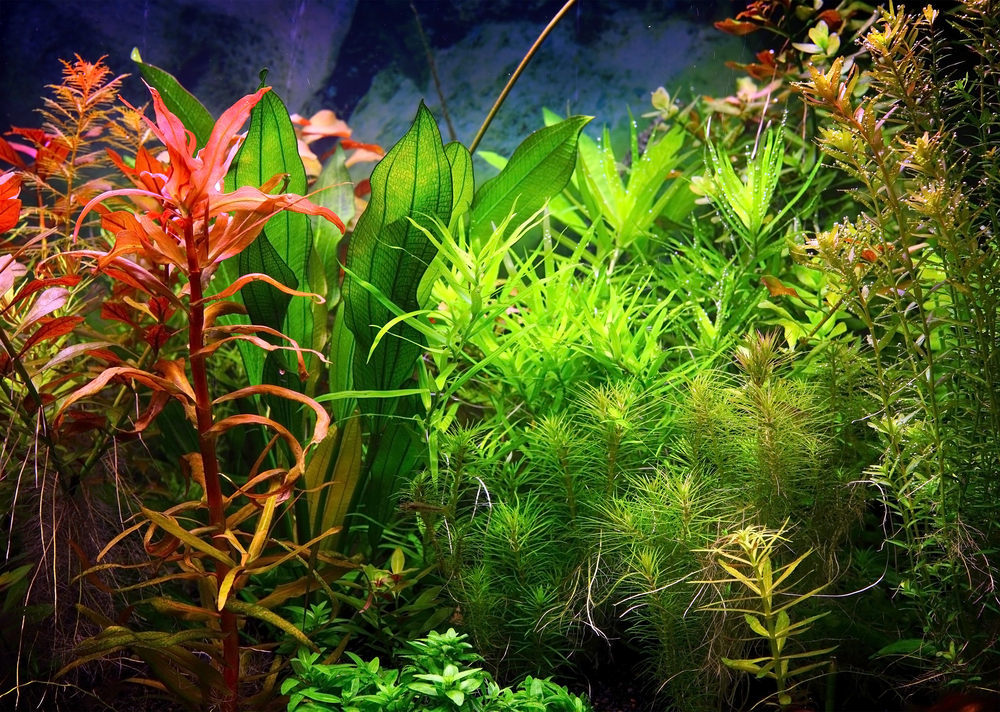
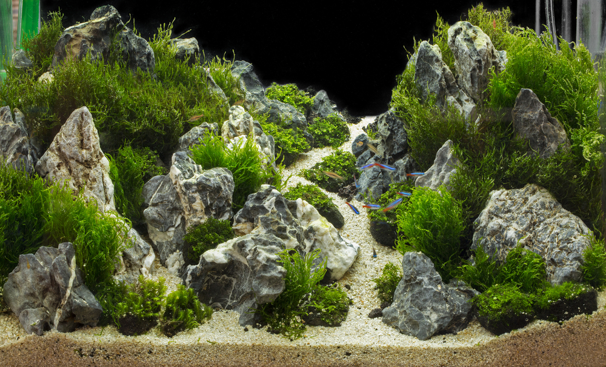
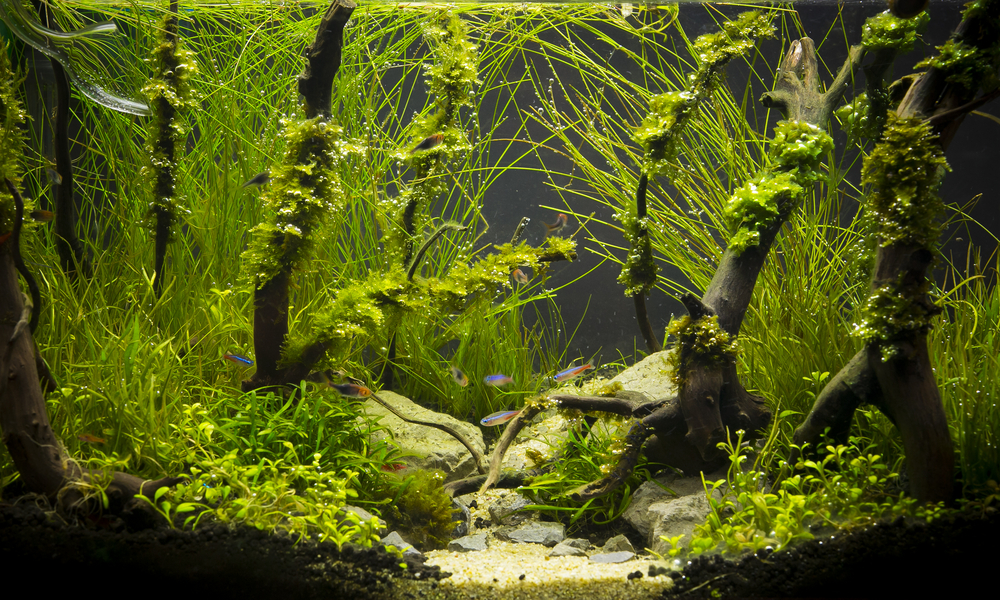

Сущность акваскейпинга
В переводе с английского слово aquascaping означает деятельность по созданию водного (или подводного) ландшафта. Кстати, во многих справочниках и даже в электронной энциклопедии это направление аквариумистики относят к декоративному прикладному искусству. Но искусству особого рода, где площадкой для воплощения творческих идей является обыкновенный аквариум.
В принципе практически любой работающий искусственный водоем имеет свой неповторимый внутренний ландшафт. Действительно, когда насыпают грунт, устанавливают декорации, сажают водные растения, организуют подсветку, то в аквариуме создается соответствующий интерьер.
Однако акваскейпинг означает не воплощение обыкновенного ландшафта, а дизайнерское решение, возведенное в ранг искусства.
Считается, что родоначальником акваскейпа именно как искусства является Такаси (Такаши) Амано. Этот японский спортсмен, фотограф, аквариумист, писатель и бизнесмен в 80-х годах прошлого столетия разработал уникальную концепцию природного аквариума. Позже данное направление прикладного искусства официально получило наименование «акваскейпинг».
Будет неправильным полагать, что до Амано не существовал тематический аквариумный дизайн. Так, например, в 60-х годах довольно большую популярность получил аквариумный дизайн в голландском стиле, который предусматривает зонирование водной растительности по месту расположения и размерам, чередование зеленого и красного цветов листьев.
Направление аквадизайна, разработанного Амано, называют природным или японским. Это означает, что подводный пейзаж является миниатюрой естественного природного ландшафта. И любая такая миниатюра является настоящим шедевром.
Как и в каждом виде искусства, в акваскейпинге тоже существуют свои законы, термины, основные понятия, которые должны быть известны тем, кто серьезно желает заниматься аквариумным дизайном.
Стиль
В каждой области искусства имеются свои направления, а любой художник обладает собственным стилем. Так и в акваскейпе: несмотря на его «молодость», в нем уже существует около десятка устойчивых направлений или стилей.
Голландский стиль
Предусматривает четкое разделение формованных растений по размерам и расположению в перспективе. Аквариумы в подобном стиле, как правило, длинные и невысокие, рыбок там совсем немного, а предпочтение отдается строгому соблюдению пропорций в соответствии с принципом золотого сечения.
Дзен сад
(Zen Garden) — это стиль, где количество элементов (камни, коряги, растения и даже рыбы) строго определено: каждый из них имеет свой обусловленный размер, расположен в определенном месте (за исключением рыбок, естественно). Чтобы понять основную идею такого ландшафта, достаточно вспомнить о знаменитом саде камней в Киото (Япония).
Ивагуми
Не совсем обычное направление, главной особенностью которого является каменная композиция. Минимальное количество растительности и оригинальное расположение камней создает подобие естественных подводных скал.
Стиль ваби-куса
(Wabi-Kusa) по-настоящему оригинален и позволяет создать уникальные композиции. Дело в том, что ее центром является заросшая растительностью кочка или островок, расположенные точно в геометрической середине аквариума. Изюминкой данного направления чаще всего бывает сочетание подводной и надводной частей этого островка.
Биотопный аквариум
Имитирует какой-либо участок природного водоема. Обычно для воссоздания используются типичные для местности растения. Если раздобыть их не удается, то можно подобрать похожие внешне. Когда аквариумист планирует биотопный аквариум, то его цель — создать окошко в подводный мир. Некоторые дизайнеры своим творчеством пытаются привлечь внимание к некоторым экологическим проблемам, например к загрязнению окружающей среды или чрезмерному использованию природных ресурсов. При оформлении биотопных аквариумов применяются практически все подручные материалы и желательно, чтобы они были добыты из диких водоемов. Обычно это камни, коряги и даже высушенные листья. Рыб в такие аквариумы подбирают тоже согласно локалитету. Считается, что в условиях, наиболее приближенных к природнsм водные обитатели демонстрируют весь потенциал свой красоты.
Композиция
Данное понятие является основополагающим как в изобразительном, так и в прикладном искусстве. Оно связывает разнородные элементы в одно целое, что придает произведению искусства законченный гармоничный вид.
Правила композиции, естественно, существуют и в акваскейпе. Композиция (или форма) в аквадизайне может быть следующая:
- прямоугольная, когда растения и элементы декора обладают примерно одинаковыми размерами, особенно по высоте;
- треугольная — высота растений плавно понижается от центра в обе стороны или от одного края аквариума к другому;
- выпуклая, где самые высокие и объемные элементы располагаются в геометрическом центре;
- вогнутая, когда в центре помещают малые декорации или низкие растения.
С понятием композиции тесно связан еще один термин, обозначаемый как «перспектива».
Перспектива в аквадизайне
Создавая образы на плоском холсте, живописец добивается эффекта перспективы путем постепенного уменьшения изображаемых предметов. Примерно то же самое делают и дизайнеры в акваскейпе.
Но объемный предмет, которым является аквариум, позволяет достигать эффекта перспективы и другим способом: с помощью определенной укладки грунта.
Например, если уложить его тонким слоем около лицевого стекла и плавно увеличивать толщину слоя по мере продвижения к задней стенке, то будет создан этот самый эффект перспективы. Он усиливается, если на заднем плане разместить более мелкие декоративные предметы или растения.
Фон
Он является одной из важнейших составляющих водного пейзажа.
- Красный или ярко-желтый фон только отвлекает взгляд от самого ландшафта.
- Так что если аквариум будет стоять около стены, то лучше использовать черный или синий цвет.
- Лиственный фон задней стенки целесообразно смотрится в тропическом пресноводном аквариуме.
- А вот изображение скал на задней стенке будет уместно в морском аквариуме или в цихлиднике.
В случае когда аквариум расположен на открытом пространстве, фактура фона, естественно, не так уж и важна.
Свет
В акваскейпинге он играет очень заметную роль. При создании водного пейзажа иногда бывает очень важным выделить отдельные зоны с помощью направленного света или, например, организовать слегка приглушенное освещение. Все зависит от вида пейзажа.
Однако тут имеется одна важная особенность: освещение должно способствовать не только созданию задуманных визуальных эффектов, но и стабильному существованию водной растительности. А она, как известно, при недостаточном освещении деградирует.
Рыбы
Природные аквариумные ландшафты бывают и чисто растительными, но если решено в него запустить рыбу, то следует учитывать ряд особенностей. Прежде всего это повадки тех или иных рыбок. К примеру, если они копают грунт, то с таким трудом выполненный водный пейзаж будет безжалостно разрушен. Кроме того, подобное поведение очень сильно вредит водным растениям.
Важную роль в аквадизайне играет и размер рыб. Несколько крупных обитателей аквариума будут, несомненно, отвлекать внимание от созерцания ландшафта. И напротив, стайка мелких рыбок придаст пейзажу иллюзию большего пространства.
Акваскейпинг — это благодатное поле для воплощения разнообразных фантазий и творческих пристрастий. Но, как и в любом другом деле, здесь не нужно излишеств: желательно найти оптимальный баланс между внешней красотой и сохранением условий содержания декоративных рыб и растений.